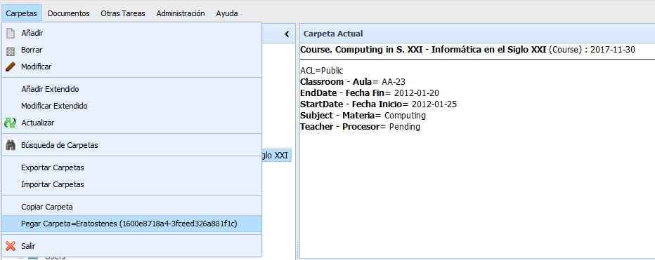

Las funciones de mover una carpeta permiten trasladar una carpeta (y todo el arbol de carpetas y documentos contenidos en ella) a otra carpeta de OpenProdoc.
Para ello debe seleccionarse una carpeta y activar "Carpetas -> Copiar". Esta accion selecciona la carpeta como elemento a copiar, activando en la opción "Carpetas -> Pegar" y mostrando el título y código único de la carpeta que será copiada. Después debe elegirse la carpeta destino y elegir "Carpetas -> Pegar". La carpeta (y todo el arbol de carpetas y documentos contenidos en ella) se moverá a la nueva carpeta, desactivandose la selección. Antes de pulsar "Pegar", es posible elegir otra carpeta, que sustituirá la anterior.
No podrá realizarse si no se dispone de permisos de borrado como mínimo sobre la carpeta.
Debe tenerse en cuenta que el mover a otra carpeta NO CAMBIA LOS PERMISOS de la carpeta ni de ninguno delos elementos contenidos en ella, se mantiene el ACL que tenia antes de ser movida. Igualmente debe recordarse que el movimiento a otra carpeta puede implicar que no se apliquen procesos programados anteriormente, o que se apliquen otros nuevos (Expurgo, Exportación, ...), ya que la mayoría de los procesos tiene un ámbito de aplicación de ramas de carpetas.
